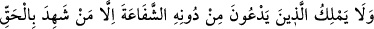
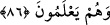
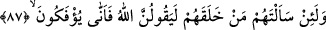

İlk adımda ayaktan düşersin.
86. Allah’ı bırakıp da taptıkları putlar, şefâat edemezler. Ancak bilerek hakka
şâhidlik edenler bunun dışındadır.
Kâfirlerin “Allah’ı bırakıp da taptıkları putlar,” onların zannettikleri gibi “şefâat
edemezler,” buna muktedir değillerdir. “Ancak bilerek hakka” tevhîde “şâhidlik
edenler” Îsâ (a.s.), Üzeyir (a.s.) ve melekler “bunun dışındadır.”
Âyetteki istisnâ “muttasıl” olup, ismi mevsul de Allah’tan başka ibâdet olunan Hz.
Îsâ, Hz. Üzeyir, melekler ve diğerleri gibi her mâbûdu kapsayıcıdır. Yahut bu istisnâ
“munfasıl” olup yalnız putlara mahsustur. Bunlar şâhidlik yaptıkları şeyi basîret, kesin
inanç ve samîmi olarak bilmektedirler.
Kâşifî şöyle demiştir: Onlar dilleriyle şâhidlik ettiklerinin -müminlerin günahkârları
hariç- kendilerine şefâat etmeyeceklerini biliyorlar.”
87. Andolsun onlara kendilerini kimin yarattığını sorsan elbette «Allah» derler. O
halde nasıl (Allah’a kulluktan) çeviriliyorlar?
“Andolsun onlara,” o âbidlere ve mâbûdlara “kendilerini kimin yarattığını,” îcad
edip yokluktan varlık âlemine çıkardığını “sorsan,” durum gâyet açık olup inkârı
mümkün olmadığı için “elbette «Allah» derler.” Çünkü insan mârifetullah; yani Allah’ı
bilmek için yaratılmıştır. Bu itiraf ve mârifet onun fıtratına konmuştur. Allah bu
hususiyeti insana bahşetmiş, onu bu mârifetle yüceltmiştir. Peygamberleri tanımak ise
onların dâvetini kabul etmekten, onların sünnetine uymaktan ve onların dinlerini
benimsemekten ibarettir. “O halde” her şeyin Allah tarafından yaratıldığını itiraf
etmelerine
rağmen
“nasıl”
Allah’a
kulluktan
başkalarına
ibadet
etmeye
“çeviriliyorlar?”
İfk; döndürmek, reddetmek, geri çevirmek demektir.
Bunlar, herkesin Allah tarafından yaratılmış olduğunu kabul ettikleri halde Allah’a
kulluktan vazgeçip başkasına kulluğa nasıl çevriliyorlar? Bu ifâde, onların fıtratlarına
tevhîdi itiraf özelliğinin yerleştirilmiş olmasına rağmen onu inkâr etmelerindeki hayreti
mûcip durumu anlatmaktadır.
el-Es’iletü’l- Mukhame’de şöyle denilmektedir: Bu âyet mârifetullahın, O’na